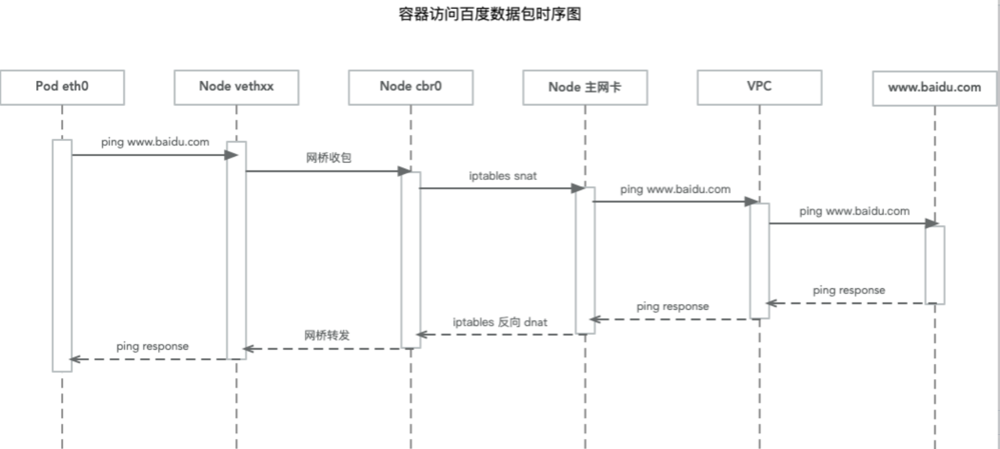

本章主要介绍了ip-masq-agent在k8s集群中的部署和使用
ip-masq-agent简介
ip-masq-agent 配置 iptables 规则以隐藏位于集群节点 IP 地址后面的 pod 的 IP 地址。 这通常在将流量发送到集群的 podCIDR范围之外的目的地时使用。
什么是snat
源地址转换是内网地址向外访问时，发起访问的内网ip地址转换为指定的ip地址（可指定具体的服务以及相应的端口或端口范围），这可以使内网中使用保留ip地址的主机访问外部网络，即内网的多部主机可以通过一个有效的公网ip地址访问外部网络。
A公司拥有多个公网IP（60.191.82.105-107），A公司希望内部用户（IP为192.168.1.50）使用某个特定的IP（60.191.82.107）访问互联网，则需在出口路由设备上需要配置源地址转换。
部署ip-masq-agent
通过运行以下 kubectl 指令创建 ip-masq-agent:
1 | kubectl apply -f https://raw.githubusercontent.com/kubernetes-incubator/ip-masq-agent/master/ip-masq-agent.yaml |
您必须同时将适当的节点标签应用于集群中希望代理运行的任何节点。
1 | kubectl label nodes my-node beta.kubernetes.io/masq-agent-ds-ready=true |
ip-masq-agent配置项
代理配置文件必须使用 YAML 或 JSON 语法编写，并且可能包含三个可选值：
- nonMasqueradeCIDRs: CIDR 表示法中的字符串列表，用于指定不需伪装的地址范围。
- masqLinkLocal: 布尔值 (true / false)，表示是否将流量伪装到本地链路169.254.0.0/16 前缀，默认为 false。
- resyncInterval: 代理尝试从磁盘重新加载配置的时间间隔。 例如 ‘30s’，其中 ‘s’ 是秒，’ms’ 是毫秒等…
TKE中的ip-masq-agent配置和使用
VPC 网络：10.168.0.0/16
集群网络：172.18.0.0/16
1 | apiVersion: v1 |
上述配置的意思是：访问目的网络10.168.0.0/16和 172.18.0.0/16 不做 SNAT，其他网段都做 SNAT，不对网段 169.254.0.0/16 做特殊处理，同步周期为1分钟。
节点的iptables规则
1 | [root@VM_1_4_centos ~]# iptables -t nat -L IP-MASQ-AGENT |
容器访问外网的数据链路图

添加描述
使用问题
问题: 客户在vpc内开启了nat网关，节点上可以访问外网，但是到容器内却无法访问外网，节点上的所有pod都无法访问。
排查：这边客户之前为了不让pod访问外网修改了ip-masq-agent-config中的NonMasqueradeCIDRs为0.0.0.0/0从而导致集群内所有pod都无法上网。
解决方案：修改NonMasqueradeCIDRs，配置成pod网段和节点所在的网段。
参考链接
https://cloud.tencent.com/developer/article/1598539
https://kubernetes.io/zh/docs/tasks/administer-cluster/ip-masq-agent/

欢迎访问 Vashon 的博客，博客和文章在完善中，请大家耐心等待。 若有问题或者有好的建议欢迎留言，笔者看到之后会及时回复。